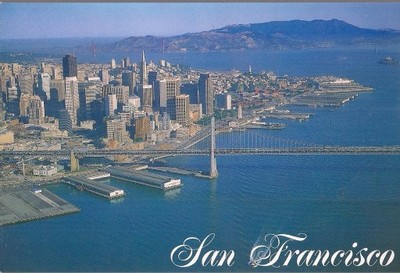

San Francisco – miasto i hrabstwo w stanie Kalifornia w Stanach Zjednoczonych, położone na półwyspie San Francisco, otoczonym przez Ocean Spokojny na zachodzie, zatokę San Francisco na wschodzie i cieśninę Golden Gate na północy, czwarte pod względem liczby ludności miasto w Kalifornii i trzynaste w całym kraju. Jest częścią obszaru metropolitalnego San Francisco Bay Area, którego liczba ludności przekracza 7,2 miliona.
|  | |
| Państwo | Stany Zjednoczone |
| Stan | Kalifornia |
| Data założenia | 29 czerwca 1776 |
| Prawa miejskie | 15 kwietnia 1850 |
| Powierzchnia | 600,7 km² |
| Numer kierunkowy | +415 |
| Kod pocztowy | 94101-94188 |
Misja pod nazwą Yerba Buena zał. 1776 przez franciszkanów hiszp.; od 1821 w niepodległym Meksyku; po wojnie meksyk. włączone 1848 do USA; po odkryciu 1848 złota w Kalifornii gwałtowny wzrost liczby mieszk. (1848 — ok. 800, 1850 — ok. 35 tys., 1900 — ok. 350 tys.); 1850 prawa miejskie; w 2. poł. XIX w. napływ imigrantów (zwłaszcza robotników do budowy kolei) z Chin i Japonii; 1906 trzęsienie ziemi i pożar zniszczyły znaczną część zabudowy w centrum miasta; do 1915 odbud. w nowym kształcie urbanistycznym. Konferencja 1945. W San Francisco 25 IV–26 VI odbyła się konferencja założycielska Organizacji Narodów Zjednoczonych, z udziałem 50 państw (bez Polski), podczas której przyjęto i podpisano Kartę NZ. Traktat pokojowy 1951. W San Francisco 4–8 IX odbyła się konferencja z udziałem 51 państw, pozostających w czasie II wojny światowej w stanie wojny z Japonią; 48 z nich (bez ZSRR, Polski i Czechosłowacji) podpisało z nią 8 IX traktat pokojowy; uznano suwerenność narodu jap. i prawo Japonii do samoobrony, ustalono termin zakończenia amer. okupacji wojsk., Japonia zrzekła się terytoriów mandatowych na Oceanie Spokojnym, które wraz z wyspami Bonin i Okinawa przeszły pod administrację USA, oraz południowego Sachalinu, Kuryli (na rzecz ZSRR), Tajwanu i in.; także 8 IX USA i Japonia podpisały traktat o bezpieczeństwie, zgodnie z którym USA wzięły na siebie obowiązek obrony Japonii, co wiązało się ze stacjonowaniem wojsk amer. w Japonii i jej sąsiedztwie. Dokładniej opisana historia San Francisco[otwiera się w nowym oknie]
Obecnie podstawą gospodarki San Francisco jest turystyka. Miasto wraz ze swoimi atrakcjami, spopularyzowane w sztuce i kulturze, stało się szeroko rozpoznawalne na świecie. San Francisco przyciąga czwartą co do wielkości liczbę turystów spośród wszystkich miast w Stanach Zjednoczonych[92] z Pier 39 na Fisherman's Wharf, jako trzecią co do popularności atrakcją turystyczną w kraju[93]. W 2014 roku miasto odwiedziło ponad 18 milionów turystów, wprowadzając do jego gospodarki ponad 10 miliardów dolarów. San Francisco, ze swoim dużym zapleczem hotelowym oraz światowej klasy centrum konferencyjnym Moscone Center, jest także jednym spośród dziesięciu najpopularniejszych miejsc do organizowania konferencji i konwentów. Centrum San Francisco z widokiem na biurowce w Financial District Na początku XX wieku miasto stało się głównym centrum bankowym i finansowym na Zachodnim Wybrzeżu. Montgomery Street w Financial District była znana jako „Wall Street Zachodu” ze znajdującymi się przy niej m.in.: Bankiem Rezerw Federalnych, główną siedzibą korporacji Wells Fargo, a także obecnie już nie działającą Pacific Coast Stock Exchange (Giełda Papierów Wartościowych Wybrzeża Pacyficznego). W San Francisco powstał także Bank of America, pionier usług dla klasy średniej, który na swoją siedzibę wybudował w 1960 roku nowoczesny budynek na 555 California Street. W mieście mają swoje siedziby lub oddziały także inne instytucje finansowe, banki i spółki venture capital, jak m.in.: Charles Schwab Corporation, Bank of the West, Union Bank of California, Visa czy United Commercial Bank.
Alcatraz Island – wyspa na Zatoce San Francisco. W języku hiszpańskim zwana jest Wyspą Głuptaków (hiszp. Isla de los Alcatraces), a w angielskim nazywana także Skałą (ang. The Rock). Znajduje się na niej nieczynne już więzienie o zaostrzonym rygorze, działające od 1934 do 1963 roku. Zamknięte zostało głównie z powodu wysokich kosztów utrzymania, błędów konstrukcyjnych i powstających uszkodzeń betonowych elementów poprzez słone, nadmorskie powietrze. Główny budynek więzienny został wybudowany w latach 1909–1912.